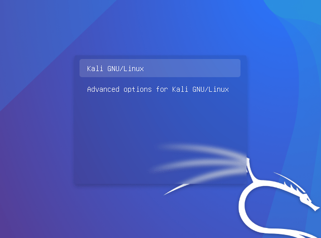
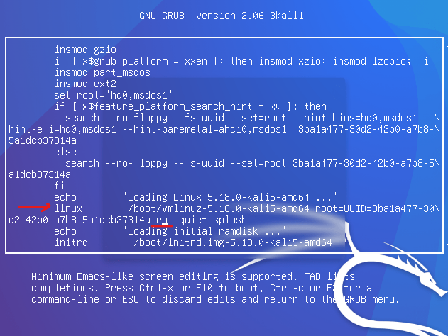
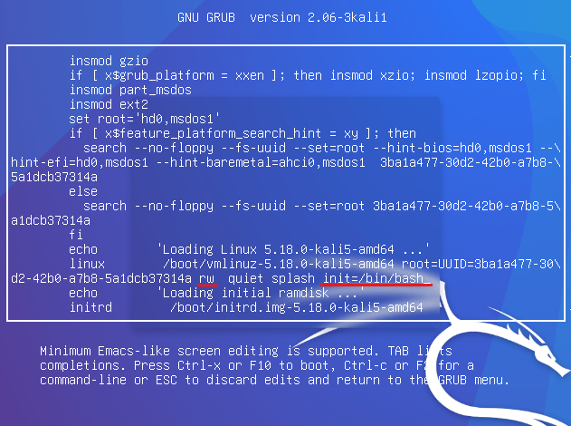
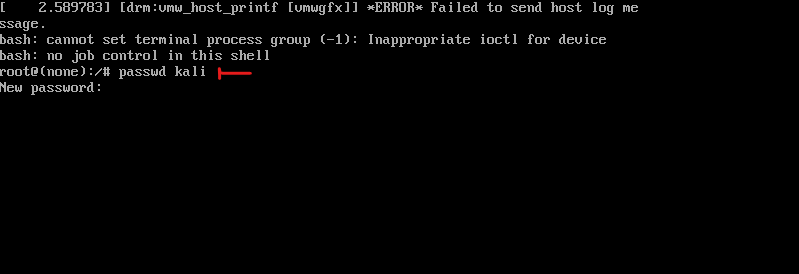
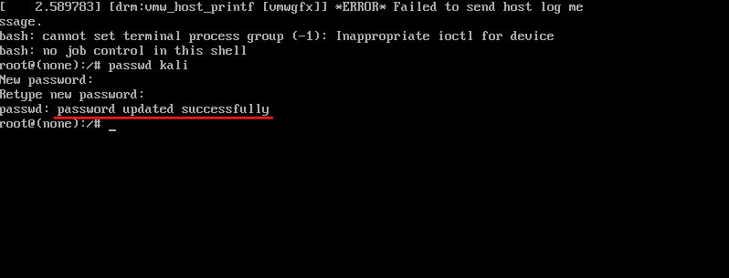

| How to change the forgotten linux password (kali linux)
If you have forgotten your linux password, there’s a way in order to change it to new password. Demonstrated in kali linux.
- When you start your kali linux on the boot menu you two choices, while you’re on the first one click onEbutton to edit.
- With arrow-keys go down till you seelinux /boot/….. then change thero(read-only) torw(read-write).
- Go to the end of the line after splash and typeinit=/bin/bash. (this tells the linux to open the bash when it's booting up).
- To execute just click on ctrl + x.
- You’ll see the bash opened and for changing specific user’s password type passwd user-name-here or if you want to change the root’s password just type passwd.
- Enter your new password twice if everything went successfully you’ll see this message:
- For exiting the bash just click on Ctrl + Alt + Del or if you’re on virtual machine (virtual box), on the top menu go to Input>keyboard>Insert Ctrl + Alt + Del.
- Now you can log in with new password \(￣︶￣*\)).




